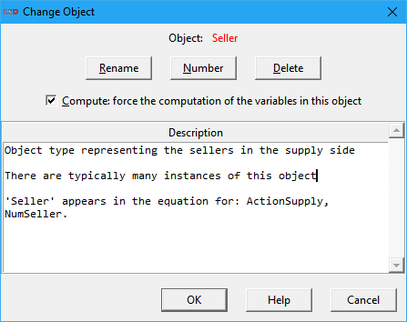
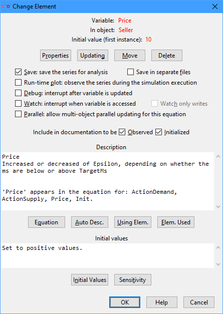
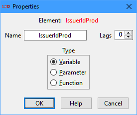
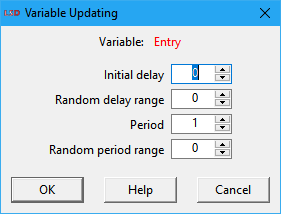

LSD Main Browser
|
|
b. Changing Variables and Parameters 2. Menu File 3. Menu Model 4. Menu Data 5. Menu Run 6. Menu Help |

The main LSD Browser has two purposes: to show/edit the contents of one Object type (referred as the current Object) at a time and to serve as the control center for all LSD activities before and after a simulation run.
The LSD Browser is the main window of an executing LSD model program. The LSD Browser is usually automatically open by LMM after a successful compilation of the current LSD model. Directly launching the LSD model program is also possible but may require previously setting up the operating system environment.
The Browser window
The Browser window is formed by five elements: (1) the menu bar, (2) a shortcut tool bar, (3) the current Object information bar, (4) the descending Objects list box, and (5) the Variables and Parameters list box.
The menu bar contains all commands available in the Browser and is divided in five submenus (File, Model, Data, Run, Help).
The tool bar offers shortcuts to the most frequently used commands. A single mouse click on the shortcut executes the associated menu command. Hovering with the mouse over the shortcut icons shows the command name on the right part of the tool bar.
The Browser has three main information areas, described below:
· Current Object information bar
· Variables and Parameters list box
Current Object information bar
The second red label (Current Object) in the bar indicates the name of the currently selected Object type, the one “pointed” by the Browser. Clicking on it opens the window for editing the Object (except for the Root object, which cannot be edited). Please note that any operation in an Object type affects all the instances of this Object in the model.
The information bar also reports the name of the Object from which the current Object descends (Parent Object), if any. The U key can be used to move up to the parent Object in the model structure.
Descending Objects list box
The Descending Objects list box shows the set of direct descendants (sons) Object types from the current Object in the Browser. A model in LSD is composed by a hierarchical structure of Objects and the model has a unique root Object whose name is always Root. Any Object can have any number of descending Object types and instances.
The names of the descending Objects can be double-clicked to move the current Browser Object to the selected son Object. Therefore, exploring the model using the Browser can be done by clicking on the descendants' names to go down the hierarchy and clicking on the name of the parent Object to go up in the hierarchy.
All Objects other than Root have as the first element in the list box the “↑..” item. It represents the parent Object. Pressing Enter on it, double-clicking it, or keying Backspace or U move the current Object to its parent. To quick search the next Object starting with a given character simply press the corresponding letter key (case insensitive) or underscore (_).
The Objects in the list can also be right-clicked to open the associated context menu. This menu offers shortcuts to the most common commands addressing the chosen Object. All the options available in the context menu are shortcuts to the most used options in the main menu (see below).
Additionally to the names, the LSD Browser also shows the number of instances of each Object type as in XXXX (#n), where n is the corresponding number of instances of Object XXXX. Also, Objects set not to be computed (see below) have the symbol “-” (minus) appended to n. The state of the computation flag can be toggled using the F5 key.
The order in which the Objects are listed depends on the order in which they have been created during the model configuration. In some cases, the order of the Objects in the list box may be important for helping LSD to disambiguate the sequence of evaluation of the Variables during a simulation run (see more details here). The order of Objects can be changed individually or as a whole (see menu Model>Sort Elements). To move individual Objects, select the one to be moved, press and hold the Ctrl key and use the arrow up and down keys to relocate it along the list box. Alternatively, the Move Up and Move Down (right-click) context menu provide the same functionality.
Variables and Parameters list box
The list box Variables & Parameters shows all the Variables and Parameters (and also Functions) contained in the Object type pointed by the Browser.
After the name of the Variables and Parameters there is a code between parentheses:
· (P) means the element is a Parameter (name in black color).
· (V) or (V_X), where X is a positive integer, means the element is a Variable. If X is not present, it means the Variable is not used with lagged values in Equations (name in blue color). Otherwise, the X indicates that the Variable is used in Equations with a maximum lag of X (name in magenta).
· (F) means the element is a Function (name in dark red color).
In any case, the code may have one or more symbols appended, indicating the option flags selected for the element (see details below):
· “+” (plus) (toggle shortcut: F5): element configured to have its time series saved for analysis.
· “*” (asterisk) (toggle shortcut: F6): element set to be presented during the simulation run on the Run-time Plot window.
· “!” (exclamation) (toggle shortcut: F7): Variable marked for interrupting the LSD Debugger at the time step selected in menu Run>Simulation Settings.
· “&” (ampersand) (toggle shortcut: F8): Variable configured to have all of its instances computed in parallel.
· “§” (section): Variable with a special/non-default updating scheme set.
The state of the option flags for the selected element can be directly toggled using the indicated shortcuts when applicable.
The names of the elements can be double-clicked (or Enter pressed) to open the corresponding Change Element window. To quick search the next Element starting with a given character simply press the corresponding letter key (case insensitive) or underscore (_). The elements in the list can also be right-clicked to open the associated context menu. This menu offers shortcuts to the most common commands addressing the chosen Element. The options available in the context menu are shortcuts to the most used options in the main menu (see below).
The order in which the elements are listed depends on the order in which they have been inserted during the model configuration. In some cases, the order of the Variables in the list box may be important for helping LSD to disambiguate the sequence they are evaluated during a simulation run (see more details here). The order of elements in the list box can be changed individually or as a whole (see menu Model>Sort Elements). To move individual elements, select the one to be moved, press and hold the Ctrl key and use the arrow up and down keys to relocate it along the list box.. Alternatively, the Move Up and Move Down (right-click) context menu provide the same functionality.
Changing Objects
Click on any Object name in the Descending Objects list box or the LSD Model Structure window and select the menu option Model>Change Object, or Change in the (right-click) context menu, or press Ctrl+Enter, or double-click in the LSD Model Structure to open the Change Object window.

The top part of the Change Object window indicates the name of the Object.
Next, there are four action buttons (and the respective shortcut keys):
· Rename: (shortcut: Ctrl+R) Allow renaming this Object (all instances).
· Number: (shortcut: Ctrl+N) Offer options for reducing and increasing the number of instances of this Object (see details here).
· Move: (shortcut: Ctrl+M) Move the Object and its descendants to a different parent Object. The destination parent Object cannot be one of the descendants of this Object. When the total number of instances of the destination parent (all over the model) is smaller than the number of instances of the source parent, initialization data from the excess instances of this Object are lost. Conversely, if the number of instances of the destination parent is larger than the source parent, the missing Object instances will be cloned from the last available instance. In these case, please check the initial values of the elements in the moved Option after this operation to make sure the desired values are still in place.
· Delete: (shortcut: Ctrl+D) After confirmation, deletes the object (all instances) from the model configuration.
These four actions can also be performed using the (right-click) context menu of the target Object on the Descending Objects list box and on the LSD Model Structure Window.
Below, there is one option:
· Compute: (shortcut: Ctrl+O) If checked (the default), any Variable contained in the Object will be computed in all time steps during a simulation run even if its value is not requested by any Equation. Unchecking this option will disable this behavior and unused variables are simply not computed (without affecting the simulation). This can increase the speed of the simulation run when many unused Variables are present in the model configuration.
Finally, there is a box for entering the textual description of the Object, which is used in the model documentation. The filling of the Description box is optional (but recommended) and does not affect the simulation run.
The last row of buttons offer the options for saving the changes made (OK), to continue without saving the modified options (Cancel) or to open the this help page (Help).
Changing Variables and Parameters
Double-clicking on one element in the Variables and Parameters list opens the Change Element window (example below). This window can be also launched using the main menu option Model>Change Element, or Change in the (right-click) context menu, or yet pressing Enter when the element name is already selected.

The top part of the window indicates the name of the Variable or Parameter and the Object type where it is contained.
Next, there are four action buttons (and the respective shortcut keys):
· Properties: (shortcut: Ctrl+R) Allow renaming this element, changing its type or modifying the maximum number of lags to use (Variables only). See below for details.
· Updating: (shortcut: Ctrl+G) (Variables only) Open the Variable Updating window to define special variable update timing, different from the default of updating every time step.
· Move: (shortcut: Ctrl+M) Show a list of all model Objects to which this element can be moved to. Details below.
· Delete: (shortcut: Ctrl+L) After confirmation, deletes the element from the model configuration. See below
Below the action buttons there are many options, according to the type of the current element:
· Save: (shortcut: Ctrl+S) Check to save the Variable or Parameter time series must be saved for post-simulation analysis.
· Save in separate files: (shortcut: Ctrl+F): Check to save the element’s time series to a separate file. Each checked Variable or Parameter is saved to a separate file named as the element. Note that this is never required for performing the simulation analysis using LSD but can be useful to export data to other software packages.
· Run-time plot: (shortcut: Ctrl+P) Check to plot the value of the Variable or Parameter during the simulation run on the Run-time Plot window. Note that this does not cause the automatic saving of the values in the result file for post-simulation analysis and can decrease the execution speed of the simulation.
· Debug: (shortcut: Ctrl+D) (Variables only) Check to cause the LSD Debugger to stop the simulation just after the computation of any instance of the Variable and show the state of the model. It requires that a time step (different than zero) is set in menu Run>Simulation Settings.
·
Parallel: (shortcut: Ctrl+P) (Variables only) Check to perform parallel processing when
computing the Equation for multiple
instances of this Variable in brother Object
copies. Beware that not all multi-instanced Variables can or should be
processed in parallel, to avoid deadlocks because of the particular model structure and to save the OS
overhead of creating new processing threads for computationally-light
Equations. To identify the Variables which may provide parallelization gains,
please check the Show aggregated
profiling times option in Run>Simulation
Settings. It is recommended to enable
parallel processing of one Variable at a time, starting with the
computationally-heavy ones, to make sure that the variable can be (logically)
computed in parallel. If, because of the model structure, changing one Variable
instance affects the computation of another instance of the same Variable,
directly or indirectly, such Variable calculation cannot be parallelized and
will throw a deadlock error.
WARNING: only Variables that are computationally intensive should have this
option enabled or this may end up slowing down the simulation run.
· Observed: (shortcut: Ctrl+O) Check to include this element in the list of Variables and Parameters containing relevant simulation results in the documentation of the model.
· Initialized: (shortcut: Ctrl+I) (lagged Variables and Parameters only) Check to include this element in the list of lagged Variables and Parameters requiring careful initialization values, typically the ones most relevant for the simulation results, in the documentation of the model.
Next, there is a box for entering the textual description of the element, which is used in the model documentation. The filling of the Description box is optional (but recommended) and does not affect the simulation run.
The buttons below the description box offer the following options:
· Equation: (shortcut: Ctrl+Q) (Variables only) Show in a new window the Equation (actual code) used to compute the Variable.
· Auto Descr.: (shortcut: Ctrl+A) Provide (or add) an automatic description text for the element, indication in which Variable Equations it is used. If the element is a Variable, LSD also scans the equation file looking for a comment section in the beginning of the respective Equation. If found, this section is copied in the Description box.
· Using Element: (shortcut: Ctrl+U) Present a list of Variables whose Equation makes use the element.
· Elements Used: (shortcut: Ctrl+E) Create a list of Variables and Parameters used in the Equation for the element.
For lagged Variables and Parameters only, the next part of the Change Element window offers a text box for description on the initialization values of the element, which are used in the model documentation. The filling of this box is optional (but recommended) and does not affect the simulation run. The box is automatically filled when the element initialization is done using the Initial Values (see below) or the Set All (in the Initial Values window) buttons.
In addition to the description box, lagged Variables and Parameters offer two additional buttons:
· Initial Values: (shortcut: Ctrl+N) (lagged Variables and Parameters only) Open the Set All Objects Initialization window which allows setting the initial value for all instances of the element.
· Sensitivity: (shortcut: Ctrl+T) (lagged Variables and Parameters only) Open the Sensitivity Analysis data entry window. In this window the user can enter (or past) a set of initialization values for the element on which a Sensitivity Analysis exercise is to be performed.
The last row of buttons offer the options for saving the changes made (OK), to continue without saving the modified options (Cancel) or to open the this help page (Help).
Element properties
Click on the Properties button on the Change Element window or select Properties in the (right-click) context menu of the target Variable or Parameter or press F2 on the element to change its properties. After having inserted a Variable or a Parameter, it is possible to change the properties of any element by modifying its name, transforming a Parameter into a Variable (of Function), a Variable into a Parameter or changing the maximum number of lags to use (Variables only).
WARNING: changing the properties of an element can severely compromise the model. Use this option only to fix errors. If the model is running fine, the only reason for such change is when the Equations are modified, for example, when you need to transform a Parameter into a Variable.
To change the nature of an element you use the Properties dialog window (below) to edit the element properties as required.

The available fields are:
· Name: edit the name of the element.
· Lags (Variables only): change the maximum number of lags to be used in Equations.
· Type: select the type of the element among:
o Variable: (shortcut: Ctrl+V) Turn the element into a Variable.
o Parameter: (shortcut: Ctrl+P) Turn the element into a Parameter.
o Function: (shortcut: Ctrl+F) Turn the element into a Function.
Variable updating
By default, every Variable in any Object instance in the model structure is recomputed every time step in the simulation. This is the desired behavior in most cases. However, some Variables may demand the recalculation process takes place at longer periods or only after a certain number of time steps from the beginning of the simulation or from the time the Object containing it was created.
Clicking on the Updating button opens the Variable Updating window which offers several options to change the default updating behavior for the selected Variable.

The available options are:
· Initial delay: the first time step from which the Variable should be computed, related to the time the Object containing the Variable was created, or from the beginning of the simulation for already existing Objects. The default is 0 (zero), meaning the Variable is computed as soon it is created or from time step 1 (one).
· Random delay range: setting a value different from zero, the default, allows for a random initial delay uniformly distributed between the value set for Initial delay and this value plus the range set here. If multiple instances of the Variable exist in different Object instances, each one has a dissimilar the initial delay value.
· Period: the period between the computations of the Variable, in number of time steps. The default is 1 (one), making the Variable being recomputed every time. The first period counting starts after the value set for the Initial delay option above.
· Random period range: defining a value greater than zero, the default, turns the period random, each time drawn from a uniform distribution between the set Period and this value plus the range set here. A different period is generated just after each recalculation of each Variable instance.
Variables with non-default updating scheme are marked with the “§” symbol in the Variables and Parameters list box. The list containing all Variables for which a non-default updating scheme is set can be obtained using the menu command Run>Show Elements to>Special Updating.
Warning: using special updating configurations is only supported in LSD version 7.1.1 and later. Non-default updating options are saved into LSD model configuration files (.lsd extension) and, in this particular case, the configuration files are not compatible with previous versions of LSD. If old-version compatibility is required, please reset all updating options to the default values before saving the configuration file.
Moving to another Object
Click on the Move button on the Change Element window or select Move in the (right-click) context menu of the target Variable or Parameter to move it to a different Object. After moving the element to the new Object, the element is removed from the current Object. All initialization data and options associated with the element are moved together.
WARNING: changing the location of an element in the model structure hierarchy can severely compromise the model. Use this option only to fix errors. If the model is running fine, the only reason for such change is when the data structure of the model is being redefined, together with the associated Equations.
When changing the Object in which an element is contained, the Move dialog window is shown, listing all the Object types available in the model. In the Move dialog window, select the Object to which the element should be moved to and click on OK.
Deleting
Click on the Delete button on the Change Element window or select Delete in the (right-click) context menu of the target Variable or Parameter or press Delete on the element to permanently remove the it from the model. After the confirmation of the element deletion, there is no way to undelete it (it has to be recreated using the menu Model, if needed).
WARNING: deleting an element can severely compromise the model. Use this option only to fix errors. If the model is running fine, the only reason for such change is when the element is no longer required by any Equation.